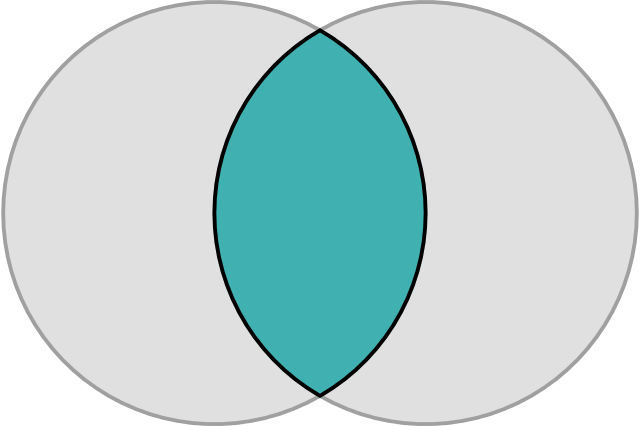
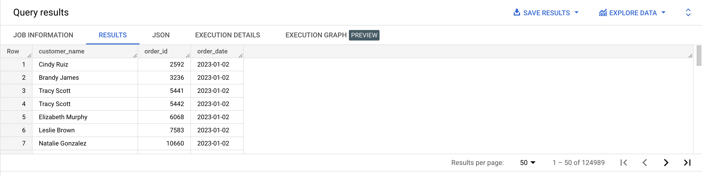
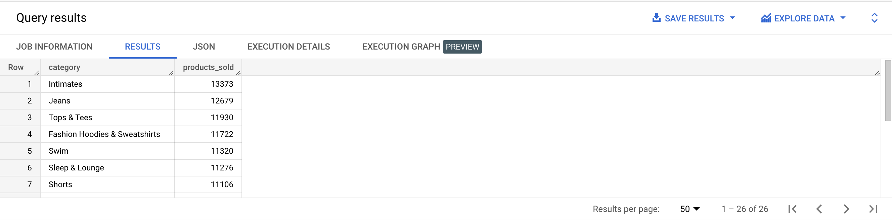
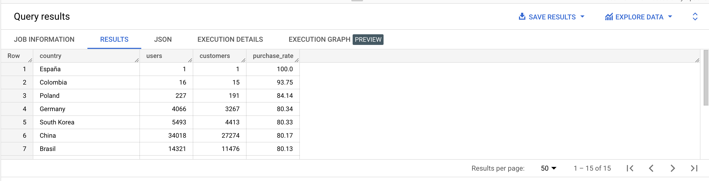
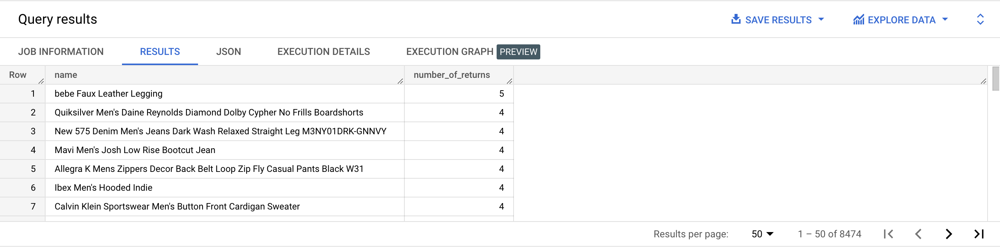
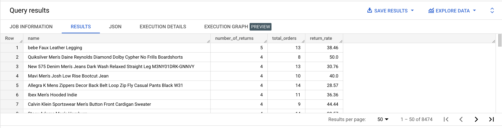
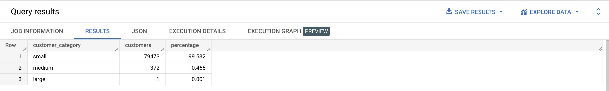
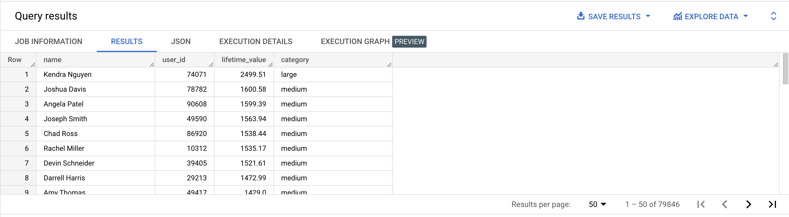
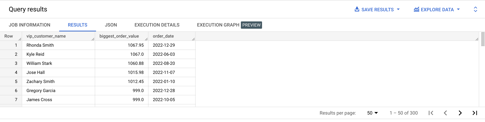
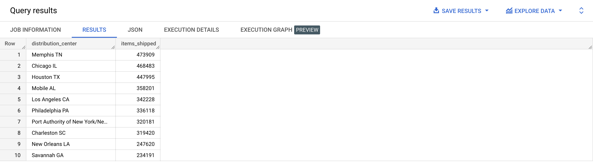

👉 Check out Visual JOIN
| Step | Clause | Description |
|---|---|---|
| 1 | FROM | Chooses the data to get the data from. |
| 2 | JOIN | Join tables. |
| 3 | WHERE | Filters the data. |
| 4 | GROUP BY | Aggregates the data. |
| 5 | HAVING | Filters the aggregated data. |
| 6 | SELECT | Returns the final data. |
| 7 | ORDER BY | Sorts the final data. |
| 8 | LIMIT | Limits the number of rows displayed. |
SELECT *
FROM bigquery-public-data.thelook_ecommerce.users
INNER JOIN bigquery-public-data.thelook_ecommerce.orders
ON users.id = orders.user_id;
SELECT users.id, orders.order_id
FROM bigquery-public-data.thelook_ecommerce.users
INNER JOIN bigquery-public-data.thelook_ecommerce.orders
ON users.id = orders.user_id
GROUP BY users.id, orders.order_id
ORDER BY users.id ASC;
SELECT users.id, orders.order_id, order_items.product_id
FROM bigquery-public-data.thelook_ecommerce.users
INNER JOIN bigquery-public-data.thelook_ecommerce.orders
ON users.id = orders.user_id
INNER JOIN bigquery-public-data.thelook_ecommerce.order_items
ON users.id = order_items.user_id
AND orders.order_id = order_items.order_id
GROUP BY users.id,
orders.order_id,
order_items.product_id
ORDER BY users.id ASC;
SELECT users.id, orders.order_id, order_items.product_id, products.name
FROM bigquery-public-data.thelook_ecommerce.users
INNER JOIN bigquery-public-data.thelook_ecommerce.orders
ON users.id = orders.user_id
INNER JOIN bigquery-public-data.thelook_ecommerce.order_items order_items
ON users.id = order_items.user_id
AND orders.order_id = order_items.order_id
INNER JOIN bigquery-public-data.thelook_ecommerce.products products
ON order_items.product_id = products.id
GROUP BY users.id,
orders.order_id,
order_items.product_id,
products.name
ORDER BY users.id ASC;
{% include practice_problems_intructions.html %}
bigquery-public-data.thelook_ecommerce.users
bigquery-public-data.thelook_ecommerce.orders
Write a query that will display the full name of each order’s customer, along with the order id and date.

SELECT CONCAT(first_name, ' ', last_name) AS customer_name,
order_id,
CAST(orders.created_at AS date) AS order_date
FROM bigquery-public-data.thelook_ecommerce.users users
INNER JOIN bigquery-public-data.thelook_ecommerce.orders orders
ON users.id = orders.user_id
ORDER BY order_date DESC;
bigquery-public-data.thelook_ecommerce.products
bigquery-public-data.thelook_ecommerce.order_items
Write a query that will display the number of products sold per category, sorted by number of products sold in descending order.

SELECT category,
COUNT(*) AS products_sold
FROM bigquery-public-data.thelook_ecommerce.products products
INNER JOIN bigquery-public-data.thelook_ecommerce.order_items order_items
ON products.id = order_items.product_id
GROUP BY category
ORDER BY products_sold DESC;
bigquery-public-data.thelook_ecommerce.users
bigquery-public-data.thelook_ecommerce.order_items
bigquery-public-data.thelook_ecommerce.products
Write a query that will display the number of customers who bought in 1 category.
| number_of_mono_category_customers |
|---|
| 36669 |
WITH mono_category_customers AS
( SELECT COUNT(DISTINCT category) AS number_of_categories_bought
FROM bigquery-public-data.thelook_ecommerce.users users
INNER JOIN bigquery-public-data.thelook_ecommerce.order_items order_items
ON users.id = order_items.user_id
INNER JOIN bigquery-public-data.thelook_ecommerce.products products
ON order_items.product_id = products.id
GROUP BY users.id
HAVING number_of_categories_bought = 1
)
SELECT COUNT(*) AS number_of_mono_category_customers
FROM mono_category_customers;
bigquery-public-data.thelook_ecommerce.users
bigquery-public-data.thelook_ecommerce.orders

WITH country_customers AS
( SELECT users.country AS country,
COUNT(DISTINCT users.id) AS customers
FROM bigquery-public-data.thelook_ecommerce.users users
INNER JOIN bigquery-public-data.thelook_ecommerce.orders orders
ON users.id = orders.user_id
GROUP BY users.country
),
country_users AS
( SELECT country,
COUNT(DISTINCT id) AS users
FROM bigquery-public-data.thelook_ecommerce.users
GROUP BY country
)
SELECT country_customers.country AS country,
country_users.users AS users,
country_customers.customers AS customers,
ROUND((country_customers.customers / country_users.users) * 100, 2) AS purchase_rate
FROM country_customers
INNER JOIN country_users
ON country_customers.country = country_users.country
ORDER BY purchase_rate DESC;
bigquery-public-data.thelook_ecommerce.orders
bigquery-public-data.thelook_ecommerce.order_items
bigquery-public-data.thelook_ecommerce.products

WITH returned_orders AS
( SELECT order_id
FROM bigquery-public-data.thelook_ecommerce.orders
WHERE (returned_at IS NOT NULL)
AND (EXTRACT(YEAR FROM CAST(returned_at AS DATE)) = 2022)
),
returned_products AS
( SELECT order_items.product_id AS product_id,
COUNT(DISTINCT order_items.order_id) AS number_of_returns
FROM returned_orders
INNER JOIN bigquery-public-data.thelook_ecommerce.order_items AS order_items
ON returned_orders.order_id = order_items.order_id
GROUP BY product_id
)
SELECT name, number_of_returns
FROM returned_products
INNER JOIN bigquery-public-data.thelook_ecommerce.products AS products
ON returned_products.product_id = products.id
ORDER BY number_of_returns DESC;
bigquery-public-data.thelook_ecommerce.orders
bigquery-public-data.thelook_ecommerce.order_items
bigquery-public-data.thelook_ecommerce.products

WITH returned_orders AS
( SELECT order_id
FROM bigquery-public-data.thelook_ecommerce.orders
WHERE (returned_at IS NOT NULL)
AND (EXTRACT(YEAR FROM CAST(returned_at AS DATE)) = 2022)),
returned_products AS
( SELECT order_items.product_id AS product_id,
COUNT(DISTINCT order_items.order_id) AS number_of_returns
FROM returned_orders
INNER JOIN bigquery-public-data.thelook_ecommerce.order_items AS order_items
ON returned_orders.order_id = order_items.order_id
GROUP BY product_id
),
total AS
( SELECT product_id,
COUNT(DISTINCT order_id) AS total_orders
FROM bigquery-public-data.thelook_ecommerce.order_items
GROUP BY product_id
)
SELECT name,
number_of_returns,
total_orders,
ROUND((number_of_returns / total_orders) * 100, 2) AS return_rate
FROM returned_products
INNER JOIN bigquery-public-data.thelook_ecommerce.products AS products
ON returned_products.product_id = products.id
INNER JOIN total
ON returned_products.product_id = total.product_id
ORDER BY number_of_returns DESC;
bigquery-public-data.thelook_ecommerce.order_items
bigquery-public-data.thelook_ecommerce.orders
The category is function of the lifetime value:

WITH customer_clv AS
( SELECT user_id,
SUM(sale_price) AS lifetime_value
FROM bigquery-public-data.thelook_ecommerce.order_items
GROUP BY user_id
),
total_customers AS
( SELECT COUNT(DISTINCT user_id)
FROM bigquery-public-data.thelook_ecommerce.orders
)
SELECT CASE
WHEN lifetime_value < 833 THEN 'small'
WHEN lifetime_value BETWEEN 833 AND 1665 THEN 'medium'
WHEN lifetime_value > 1665 THEN 'large'
END AS customer_category,
COUNT(DISTINCT user_id) AS customers,
ROUND((COUNT(DISTINCT user_id)
/ ( SELECT * FROM total_customers)) * 100, 3)
AS percentage
FROM customer_clv
GROUP BY customer_category
ORDER BY customers DESC;
bigquery-public-data.thelook_ecommerce.order_items
bigquery-public-data.thelook_ecommerce.users
Write a query that will display the customers’ full name, id, lifetime value and category. The category is function of the lifetime value:
The results should be sorted by lifetime value in descending order.

WITH customer_clv AS
( SELECT user_id,
ROUND(SUM(sale_price), 2) AS lifetime_value
FROM bigquery-public-data.thelook_ecommerce.order_items
GROUP BY user_id
),
customer_clv_category AS
( SELECT user_id,
lifetime_value,
CASE
WHEN lifetime_value < 833 THEN 'small'
WHEN lifetime_value BETWEEN 833 AND 1665 THEN 'medium'
WHEN lifetime_value > 1665 THEN 'large'
END AS category
FROM customer_clv
GROUP BY user_id,
lifetime_value,
category
)
SELECT CONCAT(first_name, ' ', last_name) AS name,
user_id,
lifetime_value,
category
FROM customer_clv_category
INNER JOIN bigquery-public-data.thelook_ecommerce.users AS users
ON customer_clv_category.user_id = users.id
ORDER BY lifetime_value DESC;
bigquery-public-data.thelook_ecommerce.order_items
bigquery-public-data.thelook_ecommerce.products
Write a query that will display the name of the most expensive item that have been sold. If there are ties, take the product whose id comes first in ascending alphabetical order.
| name |
|---|
| Alpha Industries Rip Stop Short |
WITH top_item AS
( SELECT product_id
FROM bigquery-public-data.thelook_ecommerce.order_items
ORDER BY sale_price DESC,
product_id ASC
LIMIT 1
)
SELECT products.name
FROM top_item
INNER JOIN bigquery-public-data.thelook_ecommerce.products AS products
ON top_item.product_id = products.id;
bigquery-public-data.thelook_ecommerce.order_items
bigquery-public-data.thelook_ecommerce.users
Write a query that will display the names of the customers who made at least a purchase of more than $500 in 2022
as well the value of their biggest order and the date of that biggest order.
The results should be sorted by biggest order value in descending order, and by order date in descending order.

WITH big_orders AS
( SELECT order_id,
CAST(created_at AS DATE) AS order_date,
user_id,
SUM(sale_price) AS order_value
FROM bigquery-public-data.thelook_ecommerce.order_items
WHERE EXTRACT(YEAR FROM CAST(created_at AS DATE)) = 2022
GROUP BY order_id,
order_date,
user_id
HAVING order_value > 500
),
biggest_customer_orders AS
( SELECT user_id,
ROUND(MAX(order_value), 2) AS biggest_order_value,
order_date
FROM big_orders
GROUP BY user_id,
order_date
ORDER BY biggest_order_value
)
SELECT CONCAT(first_name, ' ', last_name) AS vip_customer_name,
biggest_order_value,
order_date
FROM biggest_customer_orders
INNER JOIN bigquery-public-data.thelook_ecommerce.users AS users
ON biggest_customer_orders.user_id = users.id
ORDER BY biggest_order_value DESC,
order_date DESC;
bigquery-public-data.thelook_ecommerce.distribution_centers
bigquery-public-data.thelook_ecommerce.inventory_items
bigquery-public-data.thelook_ecommerce.order_items

SELECT name AS distribution_center,
COUNT(*) AS items_shipped
FROM bigquery-public-data.thelook_ecommerce.distribution_centers distribution_centers
INNER JOIN bigquery-public-data.thelook_ecommerce.inventory_items inventory_items
ON distribution_centers.id = inventory_items.product_distribution_center_id
INNER JOIN bigquery-public-data.thelook_ecommerce.order_items
ON inventory_items.product_id = order_items.product_id
GROUP BY distribution_center
ORDER BY items_shipped DESC;
bigquery-public-data.thelook_ecommerce.users
bigquery-public-data.thelook_ecommerce.events
Write a query that will display:
| d7_active_users_count | d0_users_count | d7_retention_rate |
|---|---|---|
| 2 | 74 | 2.7 |
WITH d7_active_users AS
( SELECT COUNT(DISTINCT users.id) AS user_count
FROM bigquery-public-data.thelook_ecommerce.users users
INNER JOIN bigquery-public-data.thelook_ecommerce.events
ON users.id = events.user_id
AND (CAST (users.created_at AS DATE) = DATE('2022-01-01'))
AND (DATE_TRUNC(CAST(events.created_at AS DATE), day) = DATE('2022-01-01') + MAKE_INTERVAL(day => 7))
),
d0_users AS
( SELECT COUNT(*) AS user_count
FROM bigquery-public-data.thelook_ecommerce.users
WHERE CAST (users.created_at AS DATE) = DATE('2022-01-01')
)
SELECT
(SELECT user_count FROM d7_active_users) AS d7_active_users_count,
(SELECT user_count FROM d0_users) AS d0_users_count,
ROUND(((SELECT user_count FROM d7_active_users) / (SELECT user_count FROM d0_users)) * 100, 2) AS d7_retention_rate;